용접기사 (2008-07-27 기출문제)
1과목: 기계제작법
1. 선반에서 탄소강재를 초경합금 바이트로 절삭하면서 절삭 저항을 측정한 결과, 주분력 800 kgf, 배분력 400 kgf, 이송분력 200 kgf 였다. 절삭저항 P(kgf)는?
- 약 1600
- 약 64000000
- 약 8000
- 약 917
(정답률: 알수없음)

2. 연삭입자를 액체와 혼합하여 압축공기로 분사시켜 표면을 가공하는 액체호닝의 특징으로 잘못된 것은?
- 가공물의 피로한도를 40% 정도 향상시킬 수 있다.
- 형상이 복잡한 부품도 쉽게 가공할 수 있다.
- 가공물 표면에 산화막을 제거할 수 있다.
- 가공물 표면에 거스러미(burr)를 제거할 수 있다.
(정답률: 알수없음)
3. 산소 - 아세틸렌 가스용접에서 표준불꽃(중성불꽃)의 화학반응식은?
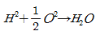
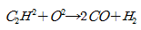
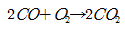
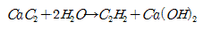
(정답률: 67%)
4. 선삭에서 가공면의 표면거칠기를 구하는 이론적인 식은? (단, 바이트의 노즈 반지름을 R, 1회전당 날의 이송량은 f이다.)
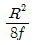
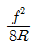
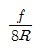
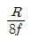
(정답률: 92%)
5. 접합하는 부재 한쪽에 구멍을 뚫고 판의 표면까지 가득하게 용접하여 다른 쪽 부재와 접합하는 용접은?
- 맞대기 용접
- 겹치기 용접
- 모서리 용접
- 플러그 용접
(정답률: 알수없음)
6. 지름 400mm의 roller를 이용하여, 폭 300mm, 두께 30mm의 판재를 열간압연하여 두께 24mm가 되었을 때, 압하량과 압하율은?
- 압하량 : 6mm, 압하율 : 20%
- 압하량 : 6mm, 압하율 : 67.5%
- 압하량 : 20mm, 압하율 : 6%
- 압하량 : 100mm, 압하율 : 20%
(정답률: 82%)
7. 화학반응을 이용한 화학가공의 특징으로 틀린 것은?
- 재료의 강도나 경도에 관계없이 가공할 수 있다.
- 변형이나 거스러미가 발생하지 않는다.
- 가공경화 현상이 적고, 표면변질 층이 크다.
- 표면 전체를 동시에 가공할 수 있다.
(정답률: 알수없음)
8. 소성가공의 종류가 아닌 것은?
- 압연가공
- 압출가공
- 냉각가공
- 프레스가공
(정답률: 70%)
9. 만네스만(Mannesmann)식 제관법은 다음 중 어느 제관법에 속하는가?
- 단접관법
- 용접관법
- 천공법
- 오므리기법
(정답률: 77%)
10. 목형을 제작할 때 주물자를 이용한다. 이 때 주물자의 선택은 무엇에 의하여 결정하는가?
- 목형의 크기
- 목형의 재질
- 주물의 재질
- 주물의 무게
(정답률: 30%)
11. 나사의 유효지름을 측정할 때, 다음 중 가장 정밀도가 높은 측정법은?
- 버니어캘리퍼스에 의한 측정
- 측장기에 의한 측정
- 삼침법에 의한 측정
- 투영기에 의한 측정
(정답률: 알수없음)
12. 머시닝 센터의 CNC 프로그래민에서 XY평면을 지정하는 G코드는 무엇인가?
- G17
- G18
- G19
- G04
(정답률: 알수없음)
13. 마이크로미터 측정면의평면도 검사에 필요한 기기는?
- 다이얼 게이지
- 옵티컬 플랫
- 컴비네이션 세트
- 플러그 게이지
(정답률: 100%)
14. 박스 지그(box jig)는 주로 어떤 작업에 가장 많이 사용되는가?
- 연삭기에서 테이퍼 가공을 소량으로 할 때
- 선반작업에서 크랭크를 절삭 할 때
- 소량의 밀린작업을 할 때
- 복잡한 가공물에서 드릴 작업을 할 때
(정답률: 알수없음)
15. 프레서(press)가공에서 굽힘성형가공이 아닌 것은?
- 시밍(seaming)
- 컬링(curling)
- 브로칭(broaching)
- 벤딩(bending)
(정답률: 알수없음)
16. 스프링 백의 설명으로 틀린 것은?
- 판재를 굽힐 때 하중을 제거하면 원래의상태로 약간 돌아오는 현상이다.
- 굽힘반경이 클수록 스프링 백의 양은 커진다.
- 스프링 백의 크기는 시험굽힘을 한 후 그 결과에 따라 결정한다.
- 같은 판재에서 경도가 높을수록 스프링 백의 양은 작아진다.
(정답률: 알수없음)
17. 순철의 자기변태점과 동소변태점의 온도는?
- A2=768℃, A3=910℃, A4=1400℃
- A2=721℃, A3=910℃, A4=1290℃
- A2=768℃, A3=100℃, A4=1530℃
- A2=723℃, A3=900℃, A4=1143℃
(정답률: 73%)
18. 담금질한 강을 상온 이하의 적당한 온도로 냉각시켜 잔류 오스테나이트를 마텐자이트 조직으로 변화시키는 것을 목적으로 하는 열처리 방법은?
- 심냉 처리
- 가공 경화법 처리
- 가스 침탄법 처리
- 석출 경화법 처리
(정답률: 72%)
19. 밀링작업시 공구와 가공용도의 설명으로 틀린 것은?
- 엔드밀 : 홈가공, 윤곽 가공, 좁은 평면가공
- 정면커터(face cutter) : 평면 가공
- 더브테일 커터 : 더브테일 홈 가공
- 메탈 쏘(metal saw) : 곡면 가공
(정답률: 알수없음)
20. 금속을 소성가공할 때에 열간가공과 냉간가공을 구분하는 온도는?
- 재결정 온도
- 변태점 온도
- 담금질 온도
- 어닐링 온도
(정답률: 73%)
2과목: 재료역학
21. 균일한 알루미늄 봉과 강재 봉은 같은 단면적과 길이를 갖는다. 같은 크기의 축 하중이 작용할 때 저장되는 탄성 변형 에너지의 비(UAl/Ust)은? (단, UAl: 알루미늄 봉의 탄성 변형 에너지, Ust: 강재 봉의 탄성 변형 에너지, 각각의 탄성계수 EAl=70GPa, Est = 210GPa)
- 1/9
- 1/3
- 3
- 9
(정답률: 42%)
22. 8cm×12cm인 직사각형 단면의 기둥 길이를 L1, 지름 20cm인 원형 단면의 기둥 길이를 L2라하고 세장비가 같다면, 두 기둥의 길이의 비 L2/L1은 얼마인가?
- 1.44
- 2.16
- 2.5
- 3.2
(정답률: 알수없음)
23. 외팔보의 자유단에 모멘트 M이 작용한다. 자유단(C)에서의 처짐량은 중앙점(B)에서 처짐량의 몇 배인가?
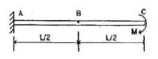
- 1배
- 2배
- 3배
- 4배
(정답률: 알수없음)
24. 평면 변형 상태에서 변형률 εx, εy 그리고
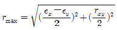
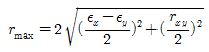
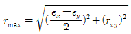
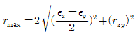
(정답률: 80%)
25. 외경이 내경의 1.5배인 중공축과재질과 길이가 같고 지음이 중공축의 외경과 같은 중실축이 동일 회전수에 동일 동력을 전달한다면, 이때 중실축에 대한 중공축의 비틀림각의 비는 어느 것인가?
- 1.25
- 1.50
- 1.75
- 2.00
(정답률: 알수없음)
26. 같은 재료로 만든 척 번째 축(L1=2L, d1=d)과 두 번째 축(L2=L, d2=2d)을 같은 각도만큼 비트는데 필요한 비틀림 모멘트의 비 T1/T2의 값은?
- 1/4
- 1/8
- 1/16
- 1/32
(정답률: 알수없음)
27. 지름 50mm의 알루미늄 봉에 100kN의 인장하중이 작용할 때 300mm의 표점거리에서 0.219mm의 신장이 측정되고, 지름은 0.01215mm 만큼 감소되었다. 이 재료의 전단 탄성계수 G는 약 몇 GPa 인가? (단, 재료는 탄성거동 범위 내에 있다.)
- 21.2
- 26.2
- 31.2
- 36.2
(정답률: 알수없음)
28. 그림과 같이 정삼각형 형태의 트러스가 길이 ℓ인 두 개의 봉으로 조립되어 절점 A에서 수직하중 P를 받고 있다. 이 두봉의 탄성계수는 E, 단면적은 A로 일정하다면 A점의 수직변위 δ는?
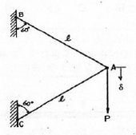
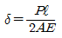
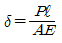
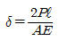
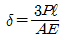
(정답률: 알수없음)
29. 길이가 ℓ+2a 인 균일 단면 봉의 양단에 인장력 P가 작용하고, 양 단에서 길이 a인 단면에 Q의 축 하중이 가하여 인장될 때 봉에 일어나는 변형량은 약 몇 cm인가? (단, ℓ=60cm, a=30cm, P=10kN, Q=5kN, 단면적 A=4cm2, 탄성계수 E=210GPa이다.)
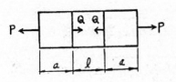
- 0.0107
- 0.0207
- 0.0307
- 0.0407
(정답률: 70%)
30. 지름 2cm, 길이 1m의 원형단면 외팔보의 자유단에 집중하중이 작용할 때, 최대 처짐량이 2cm가 되었다면, 최대 굽힘응력은 몇 MPa 인가? (단, 탄성계수 E=200GPa이다.)
- 100
- 120
- 200
- 220
(정답률: 알수없음)
31. 그림과 같이 좌측이 벽으로 지지되고 반경이 r, 두께가 t인 원통형 박판 압력용기 내의 피스톤에 F의 하중이 작용하여 용기 내에 압력이 발생하였다면, 용기에 발생하는 수직 응력 σ1 및 σ2는?
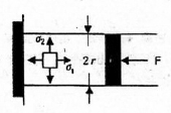
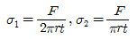
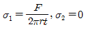
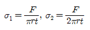
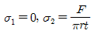
(정답률: 알수없음)
32. 비중량 γ=7.85×104N/m3인 강선을 연직으로 매달려고 할 때 자중에 의해서 견딜 수 있는 최대길이는 약 몇 m인가? (단, 강선의 허용 인장응력 σw=12MPa이라고 한다.)
- 152
- 228
- 3⑤
- 382
(정답률: 알수없음)
33. 무게가 100N의 강철 구가 그림과 같이 매끄러운 경사면과 유연한 케이블에 의해 매달려 있다. 케이블에 작용하는 응력은 몇 MPa 인가? (단, 케이블의 단면적은 2cm2이다.)
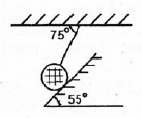
- 0.436
- 4.36
- 5
- 50
(정답률: 55%)
34. 직경 d인 원형단면의 원주에 접하는 축에 관한 단면 2차모멘트는?
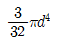
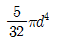
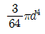
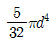
(정답률: 알수없음)
35. 그림과 같은 단면을 가진 단순보 AB에 하중 P가 작용할 때 A단에서 0.2m 떨어진 곳의 굽힘응력은 몇 MPa인가?
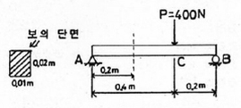
- 20
- 30
- 40
- 50
(정답률: 알수없음)
36. 다음 중 주응력에 대한 설명 중 틀린 것은?
- 주응력 상태에서 전단응력은 0이다.
- 주응력은 전단응력이다.
- 주응력 상태에서 수직응력은 극대와 극소를 나타낸단.
- 평면응력 상태의 경우 제3의 주응력은 0 이다.
(정답률: 알수없음)
37. 지름 2cm, 길이 50cm인 외팔보의 자유단에 수직 하중 P=1.5kN이 작용할 때, 하중 P로 인해 생기는 최대 전단응력은 약 몇 MPa인가?
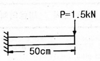
- 3.19
- 6.37
- 12.74
- 15.94
(정답률: 알수없음)
38. 동일한 전단력이 작용할 때 원형 단면조의 지름을 3배로 하면 최대 전단응력은 몇 배가 되는가?
- 9배
- 3배
- 1/3배
- 1/9배
(정답률: 알수없음)
39. 그림과 같이 외팔보의 긑에 집중하중 P가 작용할 때 자유단에서의 처짐각 θ는? (단, EI는 보의 굽힘강성이다.)
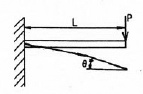
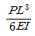
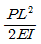
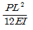
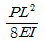
(정답률: 알수없음)
40. 강재 중공 축이 25kNㆍm의 토크를 전달한다. 중공 축의 길이가 3m이고 허용 전단응력이 90MPa이며, 축의 비틀림각이 2.5°를 넘지 않아야 할 때 축의 내경과 외경을 구라면 각각 몇 mm 인가? (단, 전단 탄성계수 G=85GPa이다.)
- 146, 124
- 136, 114
- 140, 130
- 130, 110
(정답률: 알수없음)
3과목: 용접야금
41. 강의 용접 열 영향부 중 200 ~ 750℃의 온도범위에서 현미경적으로 변화는 없으나 열응력 때문에 취성화가 나타나는 조직은?
- 조립역
- 세립역
- 취화역
- 모재 원질역
(정답률: 알수없음)
42. 용접 이음에서 냉각 속도에 대한 설명으로 옳은 것은?
- T형 필릿 이음이 맞대기 이음보다 냉각 속도가 빠르다.
- 박판이 후판보다 냉각 속도가 빠르다.
- 열량이 일정할 때 열전도율이 작을 수록 냉각 속도가 크다.
- 예열을 하면 냉각 속도가 빨라진다.
(정답률: 80%)
43. 용착금속의 응고 과정을 올바르게 설명한 것은?
- 강의 다층용접에서는 앞의 층이 다음 층의 열에 의해 재가열되므로 주조조직이 거칠어진다.
- 용융금속 내에서는 냉각할 때 전방측면부터 응고가 시작하여 결정이 측면으로 성장한다.
- 최초로 응고하는 것은 비교적 불순물이 많은 강이 된다.
- 최후로 응고하는 중앙상부에는 많은 불순물이 고이게 된다.
(정답률: 알수없음)
44. 다음 중 용융점이 가장 낮은 것은?
- 티탄
- 마그네슘
- 알루미늄
- 주석
(정답률: 알수없음)
45. 강을 표준상태로 하기 위해 가열온도를 A3 또는 Acm+50℃ 높게 하여 가공조직의 균일화, 결정립의 미세화, 기계적 성질의 향상을 목적으로 하는 열처리는?
- 풀림
- 불림
- 담금질
- 뜨임
(정답률: 알수없음)
46. 가공경화된 구리의 풀림 온도로 가장 적당한 것은?
- 200 ~ 300℃
- 450 ~ 600℃
- 700 ~ 800℃
- 850 ~ 960℃
(정답률: 64%)
47. 결정립이 과냉함에 따라 결정의 성장속도(G)와 핵발생속도(N)와의 관계로 틀린 것은?
- G가 N보다 빨리 증대할 때는 조대한 결정립이 된다.
- N의 증대가 G보다 현저할 때는 미세한 결정립이 된다.
- G와 N이 교차할 때는 2가지 구역으로 된다.
- 결정립의 대소는 G에 반비례하고 N에 비례한다.
(정답률: 84%)
48. 오스테나이트에 관한 설명 중 관계가 가장 먼 것은?
- 담금질 조직의 일종이다.
- 경도는 낮으나 인장강도가 비해 연신율이 크다.
- 비자성체로 전기저항이 크다.
- α고용체이다.
(정답률: 알수없음)
49. 금속재료를 냉간가공을 하면 결정입자는 어떤 조직으로 되는가?
- 입상조직
- 편상조직
- 층상조직
- 섬유상조직
(정답률: 알수없음)
50. 잉고트(Ingot) 주불에서 용융 금속이 응고할 때 처음 응고한 부분과 나중에 응고한 부분에서의 온도 차에 따라 농도차이를 일으키는 현상은?
- 편석
- 편정
- 포석
- 공석
(정답률: 알수없음)
51. 상온취성의 원인이 되는 성분은?
- 인
- 수소
- 염소
- 황
(정답률: 알수없음)
52. 피복금속 아크 용접봉의 심선으로 사용되는 것은?
- 고탄소림드강
- 저탄소림드강
- 특수강
- 고장력강
(정답률: 알수없음)
53. 구리의 성질을 나열한 것 중 거리가 가장 먼 것은?
- 열 및 전기 전도성이 우수하다.
- 전연성이 좋아 가공이 용이하다.
- 화학적 저항력이 작다.
- 귀금속적 성질이 우수하다.
(정답률: 93%)
54. 1350℃에서 강에 대한 산소의 용해도는 어느 정도인가?
- 0.002%
- 0.02%
- 0.2%
- 2%
(정답률: 알수없음)
55. 야금적 접합법은 금속과 금속을 물리적ㆍ화학적으로 충분히 접근시켰을 때 생기는 원자와 원자사이의 인력으로 결합되는 것으로 원자사이의 거리의 단위인 옴스트롬(Ǻ)을 바르게 표시한 것은?
- 10-12cm
- 10-10cm
- 10-8cm
- 10-6cm
(정답률: 알수없음)
56. 용접금속에 생기는 기포를 말하는 것으로 용접금속 내부에 존재하는 것은?
- 기공
- 피트
- 은점
- 언더필
(정답률: 알수없음)
57. 다음 중에서 열영향부 균열에 속하지 않는 것은?
- 설퍼 균열
- 비드 밑 균열
- 토 균열
- 힐 균열
(정답률: 84%)
58. 연강용 피복금속 아크 용접봉의 종류 중 철분저수소계 용접봉은?
- E4301
- E4313
- E4316
- E4326
(정답률: 알수없음)
59. 용융 금속의 결정을 미세화하는 방법이 아닌 것은?
- 용융 금속에 자기 교반(磁氣 攪拌)을 주는 방법
- 용융 금속에 초음파 진동을 주는 방법
- 용융 금속에 Ar 가스량을 많게 하는 방법
- 용융 금속에 합금 원소를 첨가하는 방법
(정답률: 알수없음)
60. 저온균열은 용접금속 응고 ㅎ 몇 시간 이내에 발생하는 것을 말하는가?
- 48
- 60
- 72
- 84
(정답률: 100%)
4과목: 용접구조설계
61. 피복금속 아크 용접에서 아래 그림과 같은 용착법은?
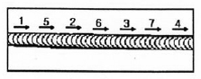
- 스킵법
- 전진법
- 후퇴법
- 대칭법
(정답률: 알수없음)
62. 구조상 용접결함을 나타낸 것으로 옳지 않은 것은?
- 언더 컷
- 용입 불량
- 변형
- 균열
(정답률: 90%)
63. 용접변형의 종류 중에서 면내 변형에 속하지 않는 것은?
- 횡 수축 변형
- 좌굴 변형
- 종 수축 변형
- 회전 변형
(정답률: 알수없음)
64. 용착효율을 나타내는 식으로 옳은 것은?
- 용접봉 사용 중량에 대한 용접시간 사용의 비
- 용접봉 사용 중량에 대한 용접금속 중량의 비
- 용접봉 사용 중량에 대한 용접시간 사용의 비
- 용접봉 사용 중량에 대한 용접봉 사용 중량의 비
(정답률: 64%)
65. 샤르피 충격시험은 무엇을 알아보기 위한 것인가?
- 취성과 인성
- 인장성과 인성
- 반복성과 취성
- 압축성과 파단성
(정답률: 79%)
66. 용접 설계 상의 주의사항을 설명한 것으로 틀린 것은?
- 용접하기 쉽도록 설계 한다.
- 용접 이음이 한 곳으로 집중되기 않게 한다.
- 반복 하중을 받는 이음에서는 특히 이음 표면을 평평하게 한다.
- 용접 길이는 가능한 한 길게 한다.
(정답률: 91%)
67. 피용접물을 정반에 고정시키든가 일시적 가설 보조재를 붙여 변형을 방지하는 방법은?
- 역변형법
- 억제법
- 냉각법
- 국부긴장법
(정답률: 알수없음)
68. 취약한 래커를 표면에 바르고 물체에 구멍을 뚫으면 이에 이하여 응력이 변화하고 래커가 주응력선에 직각으로 금이 가게 되는 것을 이용하여 잔류응력을 측정하는 방법은?
- 응력 이완법
- 응력 와니스법
- 부식법
- 자기적 방법
(정답률: 알수없음)
69. 모재를 녹이지 않고 접합하는 용접시공법은?
- 플라즈마 용접
- 심 용접
- 미그 용접
- 납땜
(정답률: 90%)
70. 세로 비드의 노치 굽힘 시험법으로 용접하지 않은 모재도 시험할 수 있는 용접부 연성시험은?
- 킨젤 시험
- 슈나트 시험
- 샤르피 충격 시험
- 카안 인열 시험
(정답률: 알수없음)
71. 용접구조물이 피로강도를 향상시키기 위한 방법이 아닌 것은?
- 열이나 기계적 방법으로 잔류응력을 완화시킬 것
- 냉간가공 등에 의하여 기계적인 강도를 낮출 것
- 다듬질 등에 의하여 단면이 급변하는 부분을 피할 것
- 가능한 응력집중부에는 용접이음부를 설계하지 말 것
(정답률: 91%)
72. 용접부 각 변형의 방지책으로 올바른 것은?
- 용착 속도가 느린 용접방법을 선택한다.
- 구속 지그를 활용하지 않는다.
- 역변형 시공을 한다.
- 개선 각도를 최대한 크게 한다.
(정답률: 알수없음)
73. 이형 용접 이음의 부재배치로서 가장 좋은 이음 구조는?
- 용접선 일치, 테이퍼부 용접
- 중심선 일치, 평행부 용접
- 중심선 불일치, 테이퍼부 용접
- 중심선 불일치, 평행부 용접
(정답률: 50%)
74. 용접작업시 전격의 방지대책으로 거리가 가장 먼 것은?
- 용접기 내부는 함부로 손을 대지 않는다.
- 용접작업이 끝났을 때나 장시간 중지할 때는 반드시 스위치를 차단 시킨다.
- 습기가 있는 보호구는 착용하지 않는다.
- 절연홀더는 그 자체가 절연되므로 맨손으로 작업하여도 무방하다.
(정답률: 80%)
75. 용접시공법 중에서 압접법에 속하는 것은?
- 전자빔용접
- 미그용접
- 마찰용접
- 테르밋용접
(정답률: 85%)
76. 비파괴시험에 속하지 않는 것은?
- 현미경 조직 시험
- 와류 시험
- 자기적 시험
- 침투 시험
(정답률: 알수없음)
77. 두께 15mm, 폭 100mm 인 강판 2장을 겹쳐 양족을 전면 필릿 용접 이음으로 용접하여 축방향으로 6000kgf의 인장하중을 작용시킬 때 용접부에서 발생하는 인장 응력은 약 kgf/mm2인가?
- 2.0
- 1.41
- 2.83
- 5.66
(정답률: 알수없음)
78. 하중 3080kgf 가 용접서에 수직방향으로 작용하는 V형 강판 맞대기 용접이음(완전용입)에서 두께가 10mm, 허용응력이 7kgf/mm2, 이음효율이 80%라면 용접길이는 몇 mm인가?
- 35
- 55
- 75
- 95
(정답률: 알수없음)
79. 화학적 시험에 속하는 부식시험에 해당하지 않는 것은?
- 습부식 시험
- 고온부식 시험
- 응력부식 시험
- 피로부식 시험
(정답률: 알수없음)
80. 인장력과 굽힘작용을 받을 경우 가장 신뢰도가 높은 T형 이음은?
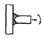
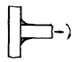
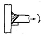
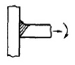
(정답률: 80%)
5과목: 용접일반 및 안전관리
81. 일종의 피복 아크 용접법으로 수평 필릿 용접을 전용으로 하는 일종의 반자동 용접장치로서 한 명이 여러 대의 용접기를 관리할 수 있는 고능률 용접법은?
- 그래비티 용접
- 용접 이행형 아크 용접
- 논 가스 아크 용접
- 반 이행형 아크 용접
(정답률: 알수없음)
82. 아크 용접봉의 피복 배합제 중 탈산제가 아닌 것은?
- 규소철
- 망간철
- 산회티탄
- 알루미늄
(정답률: 70%)
83. 플라스마 절단에 대한 특징 설명으로 틀린 것은?
- 비 이행형 절단을 플라스마 제트 절단이라 한다.
- 금속 재료는 물론 비금속의 절단에도 사용이 가능하다.
- 작동 가스로는 알루미늄 등의 경금속에 아르곤과 수소의 혼합가스가 사용된다.
- 텅스텐 전극과 모재 사이에서 아크 플라스마를 발생시키는 것을 비이행형 아크 절단이라 한다.
(정답률: 알수없음)
84. 용접시 전광선 안염을 일으키는 요인은?
- 중독성 가스
- 아크 광선
- 스패터링
- 슬래그의 비산
(정답률: 100%)
85. MIG 용접의 전류 밀도는 피복금속 아크 용접의 약 몇 배 정도인가?
- 8배
- 6배
- 4배
- 2배
(정답률: 알수없음)
86. AW300인 용저기 20대를 설치하고자 하는 공장에는 몇 kVA정도의 전원변압기를 설비해야 하는가? (단, 개로전압은 80V이고 사용율은 40%, 용접기의 평균 사용전류는 150A이다.)
- 24
- 80
- 96
- 150
(정답률: 알수없음)
87. 직류 아크 용접기와 비교한 교류 아크 용접기의 특징 설명으로 틀린 것은?
- 아크 안정성이 약간 떨어진다.
- 극성의 변화가 불가능하다.
- 전격 위험이 많다.
- 구조가 복잡하다.
(정답률: 알수없음)
88. 피복금속 아크 용접기에서 전류가 흐르는 순서로 옳은 것은?
- 용접기 → 용접봉 홀더 → 용접봉 → 아크 → 모재
- 용접기 → 용접봉 → 모재 → 용접봉 홀더 → 아크
- 용접봉 홀더 → 용접기 → 용접봉 → 모재 → 아크
- 용접봉 홀더 → 용접봉 → 용접기 → 아크 → 모재
(정답률: 알수없음)
89. 초음파 용접의 특징 설명으로 틀린 것은?
- 판의 두께에 따른 용접의 강도가 일정하다.
- 냉간압접에 비하여 주어지는 압력이 작으므로 용접물의 변형률이 적다.
- 극히 얇은 판, 즉 필름도 쉽게 용접이 된다.
- 두 금속의 경도가 크게 다르지 않는 한 이종금속의 용접도 가능하다.
(정답률: 알수없음)
90. 마찰용접의 특징 설명으로 틀린 것은?
- 취급과 조작이 간단하고 이종 금속의 접합이 가능하다.
- 작업능률이 높고 변형의 발생이 적다.
- 국부 가열이므로 열 영향부가 좁고 이음 성능이 좋다.
- 피용접물의 형상치수, 단면모양, 길이, 무게 등의 제한을 받지 않는다.
(정답률: 알수없음)
91. 피복금속 아크 용접시 용접기의 1차 입력이 25kVA 일 때 용접기의 1차 측에 설치할 안전스위치에 몇 A의 퓨즈를 붙이면 적당한가? (단, 이용접기의 전원전압은 200V이다.)
- 80A
- 100A
- 125A
- 150A
(정답률: 알수없음)
92. 레이저 용접의 특징 설명으로 틀린 것은?
- 광선이 열원이며 광선의 제어는 원격조정이 가능하다.
- 에너지밀도가 매우 낮으며, 고융점을 가진 금속의 용접에 가능하다.
- 전자부품과 같은 작은 크기의 정밀 용접이 가능하다.
- 진공 중에서도 용접이 가능하다.
(정답률: 알수없음)
93. 용접작업 중 환기장치의 필요성이 가장 낮은 것은?
- 아연도금 재료의 용접
- 불화물 용제를 사용한 용접
- 밀폐된 용기 내의 보수용접
- 교량공사의 구조물 용접
(정답률: 알수없음)
94. 용접의 시점과 끝나는 부분에는 용접 결함이 많이 발생하므로 이것을 효과적으로 방지하기 위해 부착하는 것은?
- 이면 받침대
- 엔드 탭
- 컴퍼지션 받침대
- 세라믹 뒷댐재
(정답률: 알수없음)
95. 산소 - 아세틸렌 용접기를 설치하고자 할 때 가스호스의 연결방법으로 맞는 것은?
- 아세틸렌조정기 - 회색호스, 산소조정기 - 주황색호스
- 아세틸렌조정기 - 청색호스, 산소조정기 - 회색호스
- 아세틸렌조정기 - 녹색호스, 산소조정기 - 적색호스
- 아세틸렌조정기 - 적색호스, 산소조정기 - 녹색호스
(정답률: 85%)
96. 플라스마 제트 용사법의 특징 설명으로 옳은 것은?
- 모재의 변형이 크다.
- 분사된 입자간에 열전달이 어렵다.
- 제품의 크기, 형상에 제한이 있다.
- 유기 플라스틱이나 유리 등에도 용사할 수 있다.
(정답률: 60%)
97. 저항용접에서 기밀과 수밀을 요하는데 사용하는 용접은?
- 심 용접
- 프로젝션 용접
- 점 용접
- 퍼커션 용접
(정답률: 알수없음)
98. 피복제의 일부가 가스화하여 가스를 뿜어냄으로써 미세한 용적이 날려 노재에 옮겨가서 용착되는 용적이행 방식은?
- 단락형
- 스프레이형
- 혼합형
- 글로뷸러형
(정답률: 90%)
99. 산소용기의 사용상 주의사항으로 적당한 것은?
- 통풍이 잘되고 직사광선이 잘드는 곳에 보관한다.
- 가연성 물질과 함께 보관한다.
- 안전을 위해 용기는 웁혀서 보관한다.
- 기름이 묻은 손이나 장갑을 끼고 취급하지 않는다.
(정답률: 84%)
100. 다음 용접 결함 중 전류의 세기와 관계가 가장 먼 것은?
- 용입불량
- 선상조직
- 오버랩
- 언더컷
(정답률: 100%)
P = (주분력 + 배분력) × 이송분력
P = (800 + 400) × 200
P = 120000
따라서, P는 약 120000 kgf이다. 하지만 보기에서 주어진 값 중에서 가장 가까운 값은 "약 917" 이므로, 이는 반올림한 값이다.